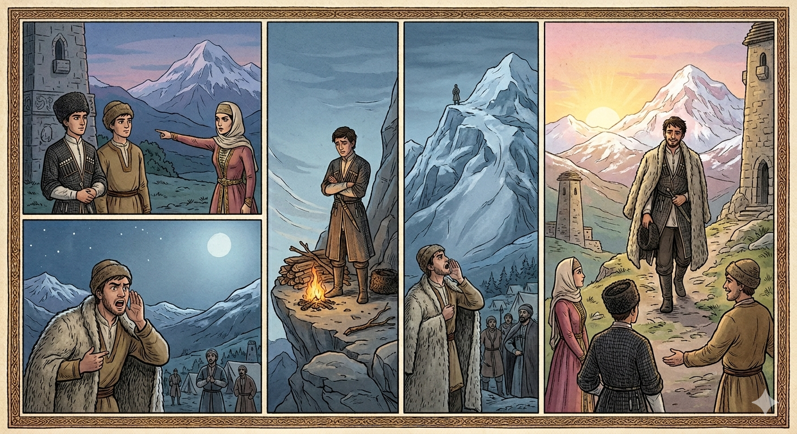

И.А. Дахкильгов. Хьехаме дувцарш - поучительные рассказы-притчи.
И.А. Дахкильгов. Хьехаме дувцарш - поучительные рассказы-притчи. Из ингушского фольклора.

ДоттагӀа дика хилча
Шин мерзача доттагӀчоа цхьа йоӀ езаенна хиннай. ВӀаший дог хайначул тӀехьагӀа, йоӀо, дикагӀчарех из а хиннаяц, аьннад: "Хьало-о латтача Баш-лоам тӀа бӀарчча бийса яьккхар коташагӀа ва". Кхадж тессаб доттагӀаша, хьалха-тӀехьа бийса йоаккхаргьяр шоаех малав, аьнна. Цхьаннега кхаьчай хьалхара бийса. Дахчан морх ийца, доам хьалвахав из. Баш-лоам керте цӀи йийзай. Тоъалча юкъа дикка яьгар из цӀи. Бийса юкъ ена хиннай. Цхьанахьара йоӀи кхычахьара доттагӀи хьийжаб Баш-лоамагахьа. ЦӀи йовш латташ хиннай. ТӀаккха лохе латтача доттагӀчо хьал урагӀа цӀогӀа техад: - ЦӀи яьга яьлча, товнаш тӀа вижа, хьайна тӀа ферта кхолла! Иштта товнаш тӀа уллаш, ферто йӀовхал дӀа ца йохийташ, сахиларга ваьннав Баш-лоам тӀара доттагӀа. Из котваьннав, хӀана аьлча, доттагӀа дика хиннав цун. Ше котваьнна вале а из йоӀ йига яц цу зӀамига саго.
РУССКИЙ
Если друг хороший
Двое неразлучных друзей полюбили одну девушку. Пошли они к ней и поведали о своих чувствах. Коварная девушка сказала, что она выйдет замуж за того, кто проведет ночь на горе Казбек и останется в живых. Бросили друзья жребий, и тот, кому он достался, взяв охапку дров, взошел на гору, разжег костер и стал у него греться. Но к полуночи дрова кончились. Тогда его друг, оставшийся внизу, стал кричать вверх ободряющие слова и стал советовать другу лечь на угасающие угли и накрыться буркой. Этому совету друг последовал и потому дотянул до утра и стал победителем. А все потому, что у него был настоящий друг. Победитель же отказался от той девицы.
ENGLISH
If a friend is a good one
Two inseparable friends both fell in love with the same girl. They went to see her and confessed their feelings. The cunning girl said she would marry whoever spent the night on Mount Kazbek and survived. The friends drew lots, and the one who won took an armful of firewood, climbed the mountain, lit a fire and began to warm himself by it. But by midnight the firewood had run out. Then his friend, who had stayed below, began shouting words of encouragement up to him and advised him to lie down on the dying embers and cover himself with his cloak. His friend followed this advice and thus managed to survive until morning, emerging as the victor. And all because he had a true friend. The victor, however, turned down the girl's hand.
НОХЧИЙН
ПОГОВОРКИ
“Ак” яхаш яьгӀа йоӀ ший даь-цӀагӀа ийсай. Девушка, постоянно твердившая “нет”, осталась старой девой. The girl who kept saying "no" was left an old maid in her father's house. «Ак» аьлла Ӏаш йисина йо1 даь ц1ахь юха а йисина.Воша а воша вац хьа, хьа из доттагӀа веце. И брат твой тебе не брат, если он еще и не друг тебе. Even your brother is not your brother, if he is not also your friend. Ваша а ваша вац хьуна, доттаг1а а веце.Воша хинна а доттагӀа хинна а оагӀув боаца саг наха даькъаза воаккх. Человека, не имеющего ни брата, ни друга, люди обездолят. A man with neither brother nor friend is left destitute by the people around him. Ваша а доттаг1а а боцу стаг наха дакъаза во.Гаьнара доттагӀа – егӀа латта гӀала санна ва. Друг в дальнем краю, что воздвигнутая там башня. A distant friend is like a tower raised far away. Генара доттаг1а гена лаьтта г1ала санна ду.Дика доттагӀа воча вешел тол. Хороший друг лучше плохого брата. A good friend is better than a bad brother. Дика доттаг1а вон вешел тоьар ву.Дикача (везача) новкъоста водар хилча, хьона во хилар да из. Горе и беда твоего лучшего друга – твои горе и беда. The misfortune of your best friend is your own misfortune too. Дика доттаг1чунна вон хилча, хьуна а вон ду из.ДоттагӀах вала атта да, доттагӀа лаха хала да. Друга легко потерять, друга трудно найти. It's easy to lose a friend, hard to find one. Доттаг1ах вала атта ду, доттаг1а лаха хала ду.ДоттагӀачоа хайта дог вешийна хайтадац. С другом бывает откровеннее, чем с братом. One reveals one's heart to a friend more freely than to a brother. Доттаг1чунна хайош дог вешега а хаяш дац.Наькъа водача сага бе елла гӀадж хинна а новкъост хила веза. В дороге нужен товарищ – хотя бы палка в руке. On the road, one needs a companion — even a stick in hand will do. Некъа т1ехь куьйга т1е долу г1аж хилча а, накъост хила беза.Тешаме воацар хьа доттагӀа вац. Тот не друг, кому нельзя довериться. One you cannot trust is not your friend. Тешаме воцург хьан доттаг1а вац.Уллув вала доттагӀа воацаш наькъагӀа ма гӀо. Не отправляйся в дальний путь без друга. Don't set off on a long journey without a friend. Доттаг1а воцуш гена некъа т1е ма гIо.Хье наькъа аравалалехьа новкъост лаха. Прежде чем выйти в путь, найди себе товарища. Before you set out on the road, find yourself a companion. Некъа т1е д1ах1отталехьа, накъост лаха.Цхьаькъа лелача саго гӀала йоттаргьяц. Одиночка башню не построит. A man alone will never build a tower. Цхьаьна лелаш верг г1ала йоттаргва вац.